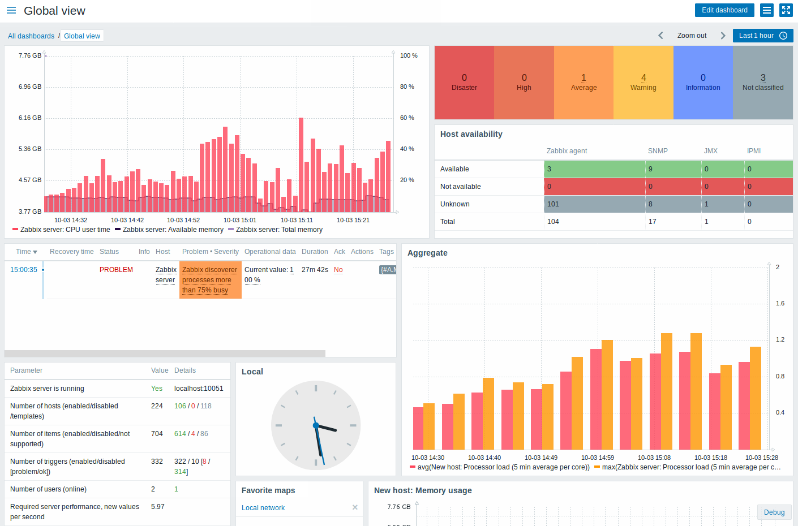
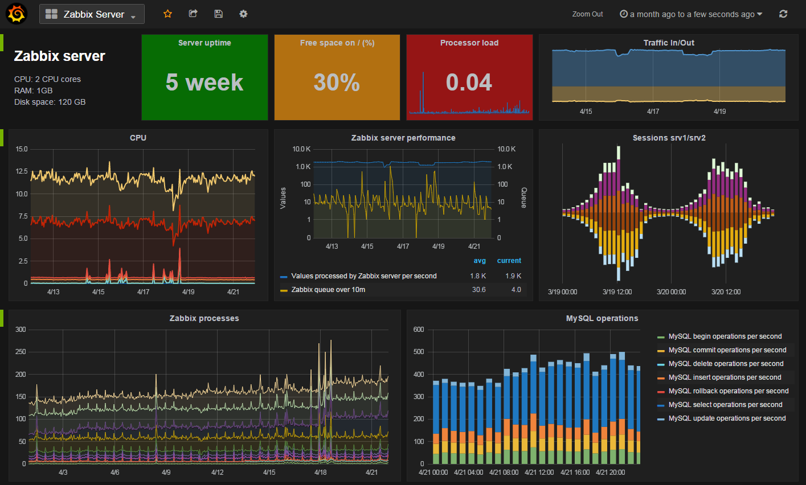

Monitoramento de Redes
Monitoramento de Redes
 Descrição do Projeto
Em um cenário onde a integridade e a performance da rede são cruciais para a continuidade dos negócios, desenvolvi um sistema avançado de monitoramento de redes com o objetivo de maximizar a visibilidade e a eficiência operacional. Este projeto focou em criar uma solução robusta e responsiva para identificar e resolver rapidamente problemas de rede, garantindo um ambiente mais estável e seguro.
Ferramentas Utilizadas
Grafana
Utilizei o Grafana para construir dashboards interativos e altamente configuráveis que oferecem uma visualização em tempo real dos dados da rede. Essa ferramenta foi essencial para transformar dados brutos em informações acionáveis, permitindo uma análise rápida e precisa das métricas de desempenho.
Zabbix
Implementado para a automação do monitoramento e a configuração de triggers inteligentes que geram alertas proativos sobre quaisquer anomalias ou falhas. O Zabbix foi fundamental para o gerenciamento de dispositivos e serviços, proporcionando um monitoramento contínuo e detalhado.
Desafios Técnicos e Soluções
Integração de Dados
A integração dos dados do Zabbix com o Grafana apresentou desafios técnicos, especialmente na sincronização e na visualização das informações. A solução exigiu a customização de dashboards para assegurar que os dados fossem exibidos de forma clara e útil, facilitando a interpretação e a tomada de decisões.
Configuração de Alertas Eficazes
Ajustar as configurações de alertas no Zabbix para minimizar falsos positivos e garantir a precisão foi uma tarefa complexa. Essa configuração precisava ser afinada para que as notificações fossem realmente indicativas de problemas críticos sem sobrecarregar a equipe com alertas desnecessários.
Resultados Alcançados
Visão Abrangente do Desempenho da Rede
A integração do Grafana proporcionou uma visão abrangente e detalhada do desempenho da rede, permitindo a identificação de problemas em tempo real e facilitando a análise de tendências e padrões. Isso resultou em uma resposta mais ágil a problemas e na otimização das operações de rede.
Redução do Tempo de Inatividade
A implementação eficaz de triggers e alertas no Zabbix contribuiu significativamente para a redução do tempo de inatividade. Com alertas precisos e oportunos, foi possível detectar e resolver problemas antes que eles impactassem negativamente a operação da rede.
Gestão Eficiente dos Recursos de Rede
O sistema permitiu uma gestão mais eficiente dos recursos de rede, melhorando a estabilidade e a confiabilidade da infraestrutura. A solução implementada resultou em uma rede mais robusta e menos suscetível a falhas, promovendo um ambiente de trabalho mais seguro e produtivo.
Melhoria na Capacidade de Resposta a Incidentes
A capacidade de visualizar e analisar dados em tempo real permitiu a detecção precoce de problemas e a intervenção imediata, evitando interrupções e minimizando o impacto das falhas. Além disso, a capacidade de ajustar alertas e configurações garantiu que a equipe de TI pudesse se concentrar em problemas críticos, em vez de ser sobrecarregada com informações irrelevantes.
Impacto Corporativo
Em um ambiente corporativo onde a continuidade dos serviços é essencial para o sucesso dos negócios, essa abordagem proativa foi fundamental para manter a confiança e a satisfação dos usuários finais. A implementação do sistema de monitoramento de redes foi crucial para garantir a alta disponibilidade e a performance otimizada da infraestrutura de TI.